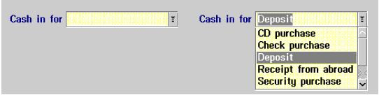

Industry Standard Adherence
The WEBS Replacement application will have the look and feel of a Windows application. Therefore, the user interface
design is based on Windows style guidelines published in The Windows Interface Guidelines for Software Design
from Microsoft.
General User Interface Principles
-
Support multiple skill levels. Just as there are different types of ski trails and modes of skiing (alpine, snow
board, etc.) at a ski resort for skiers of different skills level, there should also be different types of
interaction techniques available in the user interface aimed at users with different skill levels or preferences
(keyboard, mouse, etc.) of interaction.
-
Permit easy reversal of actions. As much as possible, actions should be reversible. This feature relieves anxiety,
since the user knows that errors can be undone. This feature thus encourages use of unfamiliar options. The units
of reversibility may be a single action, a data entry, or a complete group of actions.
Reduce short-term memory load. The limitation of human information processing in short-term memory (the rule of
thumb is that humans can remember “seven plus or minus two chunks of information”) requires that:
-
-
Displays be kept simple
-
Multiple page displays be consolidated
-
Window-motion frequency be reduced
-
Sufficient training time is allotted for codes, mnemonics, and sequences of actions
-
Where appropriate, provide on-line access to command syntax forms, abbreviations, codes, and other information.
-
Support user preferences, including preferences already established with the host system, such as the operating
system settings for fonts, colors, keyboard interaction, etc.
Design Methodology – User-Centered Design (UCD)
The key goals of the user-centered design process are to use a multidisciplinary user-centered design project team from
beginning to end and to do rapid iterative design involving the user throughout each design iteration. Each of these
steps is tailored to specific application and user environments.
-
User-centered Design Education: Customize courses on the process for the UCD project design team and
management.
-
Gather User Requirements: Conduct requirements gathering sessions with the representatives of the target
user community and UCD project design team. These sessions determine the goals for the application and its intended
audience(s), refine the scope of the project, and review available assets and technologies.
-
User Task Analysis: Using the deliverable from the requirements gathering sessions, conduct task analyses
sessions with actual users to validate client requirements and elicit the tasks users do today and imagine doing in
the future.
-
Competitive Evaluation: In parallel with User Task Analysis, evaluate competitive systems to ensure that the
best of breed will be used as a benchmark when designing and delivering a superior solution.
-
Iterative Design and Evaluation: Using deliverables from the previous three activities, the UCD project
design team designs the user interface for the application. The team uses a rapid iterative process and involves
users from day one and throughout the design process. Early prototypes are typically low-fidelity, paper-and-pencil
designs. As the design evolves, mid-fidelity prototypes using screen captures are used. Later, high-fidelity design
prototype programs are evaluated by users.
-
Design Walk-through: Present the design to actual users to assess customer satisfaction. At this point the
project design team provides a recommendation on production readiness.
-
Implementation: Bring members of the development team on board to implement the approved design. Major
design changes, regardless of where they originate, must be user tested and validated before they are introduced.
If prior user-centered design activities have been successfully completed, production will proceed more smoothly
and quickly than traditional development approaches.
-
Benchmark Assessment: Conduct a formal customer test of “beta” code to identify any remaining
high-visibility problems and make benchmark comparisons against the original goals and objectives. Benchmark
Assessment identifies any problems that must be fixed before final delivery.
Component Guidelines
Main Window
The WEBS Replacement application Main Window is the focal point of the branch banking applications. It is the initial
window displayed when the user signs on and is the point to which the WEBS Replacement user returns after each task. In
effect, the Main Window is the user’s desktop. In addition to accessing functions implemented in WEBS Replacement, it
is also used to access other applications.
Structure
From top to bottom:
-
Provide a title bar with the application icon, its associated window control menu, and a window title.
-
Have a menu bar, which is described in “Menu Bar, Main Window” on page 6.
-
Put the status area between the Lock and Cash Box push buttons. It is used to display key information
such as customer-specific promotional offers and progress messages.
-
Provide a Number text entry field for entering object identifiers and the Same customer check box.
-
Include the Customer Information table of object identifiers related to previous tasks performed for the
current customer.
-
Just below the table, place an object details area that displays selected summary information about the object
selected in the table; for example, the most frequently needed information about a customer’s checking account.
-
Include push buttons for the most commonly used actions. In the figure, they are Open/Inquire to display
information for the selected or entered identifier and the cross-reference functions: Accounts, ATM
Cards, and WFB Account.
-
Provide a message area for displaying messages relating to the current transaction. This must be the bottom-most
area in the window.
Position and Size:
The Main Window, unlike typical windows, cannot be sized or moved and it occupies the entire screen. This is consistent
with its desktop function.
Related Topics
“Menu Bar, Main Window”
Menus
For an initial list of predefined choices, see “Predefined menu choices”.
Menu Bar, Main Window
Selected
|
Services
|
Administration
|
Window
|
|
|
Figure 1. Main Window Menu Bar
The menu bar choices for the Main Window are:
-
Selected: This pull-down menu contains choices that apply to the identifier entered or selected in the
Customer Information table.
-
Services: This pull-down menu contains choices for customer functions not related to a selected or
entered object identifier.
-
Administration: This pull-down menu contains choices that perform system or user functions unrelated to
customer business.
-
Windows: This pull-down menu contains choices for managing windows, such as a choice that allows the
user to switch to the Cash Box application.
Drop-down Combo Box Control

Figure 2. Drop-down Combo Box
Use a drop-down combo box when there is a set of frequently used values provided by the system, but users may need to
provide values not in the list or they prefer to type the values rather than selecting them from a list.
Appearance Guidelines
-
Arrange the items in the drop-down list in an order meaningful to the user, such as alphabetic order or numeric
order.
-
If the field has a value when the window is opened, display that in the text box.
-
In a new object, a default value from the list may be displayed in the text box, or the text box may be
initially blank.
-
-
Avoid using codes for choices that do not match the first letters of the full choice name.
-
If codes are used for the choices that do not match the first letters of all the choice names, then include the
code as the first part of the choice. For example, if DDA is the code for checking accounts and SAV is the code
for savings accounts, their entries in the drop-down list would be DDA-Checking Account and
SAV-Savings Account.
Behavior Guidelines
-
The typed text does not have to match one of the items in the list.
-
If practical, support first letters selection of a choice from the list. That is, as the user enters characters
into the text box, automatically complete the text box with choices whose first characters match what was
typed. As the user continues to type, the text box is completed with the first choice that matches the
characters typed so far. If there is no longer a match, then the text box only contains what the user typed.
Related Topics:
“Drop-down Combo Boxes” on page 160 in The Windows Interface Guidelines for Software Design.
Accessibility Guidelines
The WEBS Replacement application will follow the IBM Web Accessibility Guidelines, including recommended checkpoints
(see Section 8 - References).
|